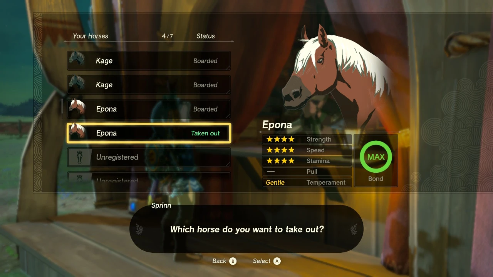
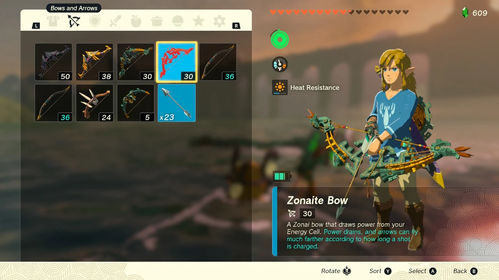
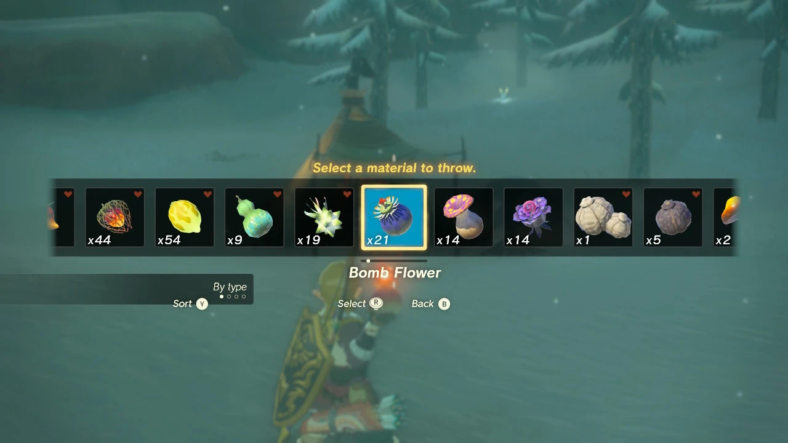
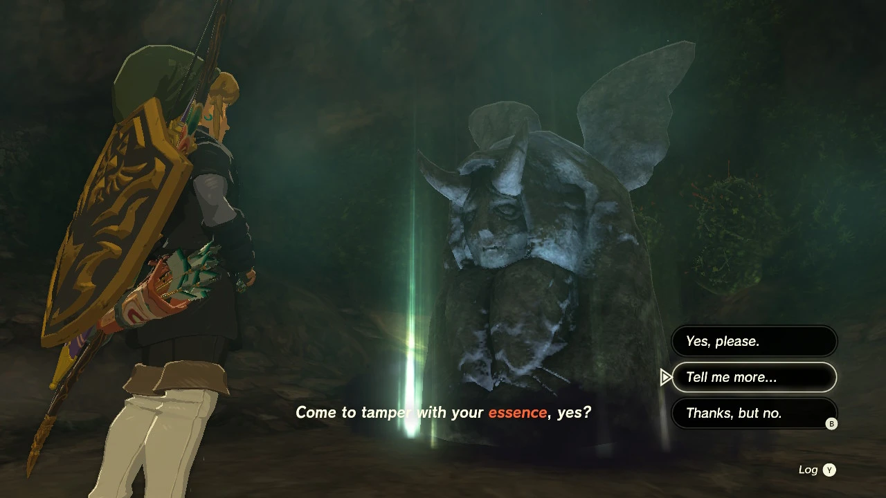

12 de Maio de 2023
1. Have your Breath of the Wild save handy for free horses
If Tears of the Kingdom detects a
Breath of the Wild save, it’ll pull the horses you had stabled
in that game, and bring them over to Tears intact – after all, this is
the same Hyrule.

Not only is it a nice little touch, it also saves you the immense
hassle of having to capture a fresh horse in the field, break it in,
and build up your relationship with it. If you had a horse with great
stats in Breath of the Wild, you’re going to want to bring it
over.
2. Go out of your way to collect arrows

Image: GamesHub via Nintendo
Bows and arrows are more important than ever in Tears of the Kingdom,
especially because of the game’s new Fuse system.
Gone are the days where there are seperate arrows like fire, ice, and
so on. Now, you can attach virtually any material to an arrow to
produce useful (and useless) effects – to freeze enemies from afar,
detonate exploding barrels, or set up a well-positioned light source
in a dark area. Experiment with everything. It’s fun!
BUT this means that you will be using a lot of arrows, for various
functions. So make sure you get in the habit of diligently collecting
arrows from battlefields and boxes early on, to make sure you never
run out. At one point in the late game, we had over 100 arrows, which
quickly diminished to zero at a time when they were badly needed.
Avoid this at all costs!
3. Remember you can throw your materials

Image: GamesHub via Nintendo
This tip is related to the last one. You’re going to use a lot of
different materials for different purposes in
Tears of the Kingdom. You’ll need to burn away spiky foliage,
light up paths, and blow up rocky passages. The easiest way to do this
is to attach materials to an arrow and let it loose. But as mentioned
in the previous tips, arrows are very important!
So, if you need to unleash an effect in a location that isn’t very far
away, try to remember you can simply throw the item (Hold R1, then
press Up on the D-Pad to replace your weapon with an item). Take a
leaf out of the survival horror genre, and save your arrows for when
you’re really going to need them!
4. You will be able to trade your hearts for stamina, and vice versa

Image: GamesHub via Nintendo
As you gradually complete more Shrines in Tears of the Kingdom,
you’ll earn Light of Blessing orbs, which you can trade for additional
hearts of life, or a longer stamina bar, at the Goddess Statues you
find around the world.
You should do what you think will be of most benefit to you, of
course.
But there will come a point in the game where you won’t be able to
progress the main story without a certain amount of hearts, and
another point where you won’t be able to progress without a certain
amount of stamina.
Thankfully, you will eventually discover a statue in Hyrule’s central
base of operations, Lookout Landing, that will allow you to trade
hearts for stamina, and vice versa – there will be an event when one
of the workers is spooked by a voice coming from inside the wall.